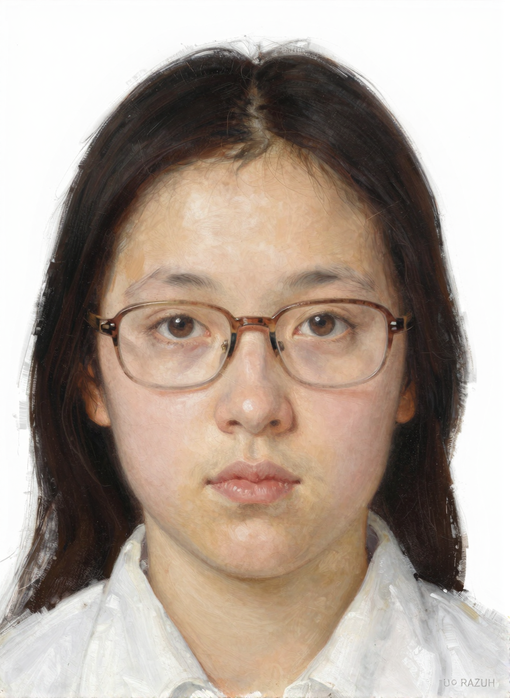
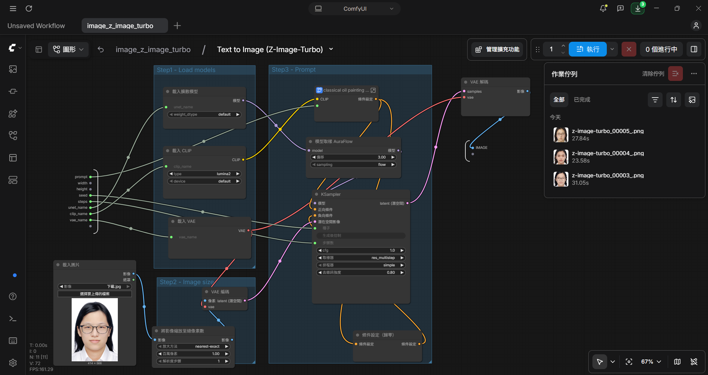
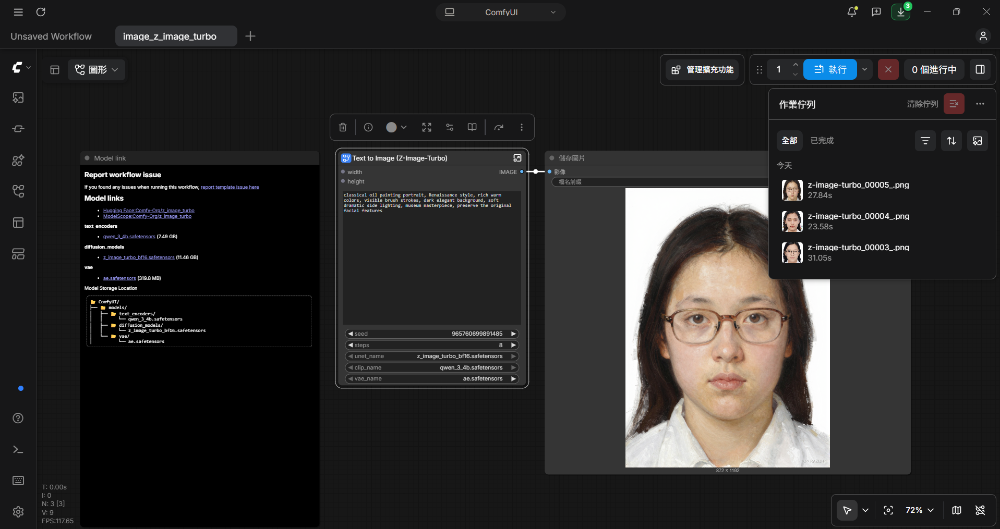

元智大學 資訊傳播系 星羽
學生證大頭照

外層：

子圖內部：

把 Z-Image Turbo 的文字生圖範本改成圖生圖：加入「載入圖片 → 將影像縮放至總像素數 → VAE 編碼」，接到 KSampler 的潛在空間影像。
正向提示詞：
classical oil painting portrait, Renaissance style, rich warm colors, visible brush strokes, dark elegant background, soft dramatic side lighting, museum masterpiece, preserve the original facial features
負向提示詞：
無（Z-Image Turbo 範本以「條件設定（歸零）」節點取代負向提示詞，cfg 為 1.0 時負向提示詞不會作用）
主要參數：去雜訊強度 0.80、步驟數 8、cfg 1.0、取樣器 res_multistep、排程器 simple
這次作業原本以為只要輸入提示詞就好，實際做才發現我載入的 Z-Image Turbo 範本是「文字生圖」，要自己加上「載入圖片」、「縮放」和「VAE 編碼」節點，接到 KSampler 的潛在空間影像，才能變成圖生圖。過程中卡了好幾次：一開始線其實接在舊的空白潛空間節點上，刪掉後才發現沒接好；後來又把提示詞打在節點標題上，結果生成時用的還是範本預設的提示詞。這讓我理解到，ComfyUI 的資料是沿著線流動的，要看清楚每條線從哪裡來，才知道模型真正讀到什麼。
調參數時，去雜訊強度的影響最明顯：0.5 時幾乎看不出變化，提高到 0.8 風格才比較明顯，但臉也會越來越不像本人，需要在風格和相似度之間取捨。